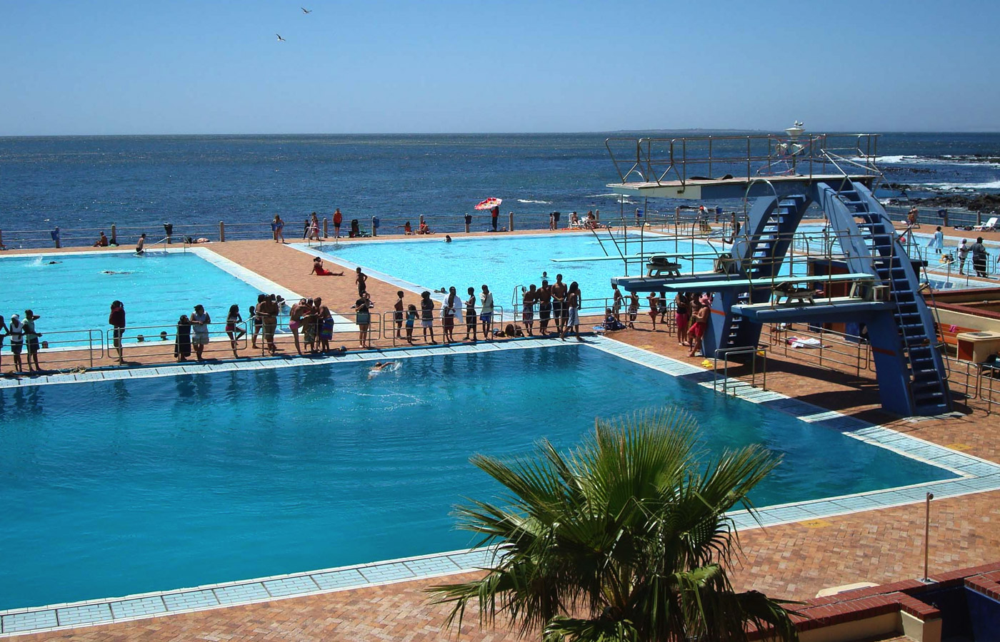

Admin
14 Jan,
2020
2 Comments
Sea Point Pavilion
The popular Cape Town summer hangout spot and public swimming pool Sea Point Pavilion has officially reopened to the public.
According to JWI.News the opening hours are 8am to 4pm and the capacity is limited to 100 people.
The public is urged to adhere to protocols, keep safe social distancing in place, and sanitise regularly.
Cape Town is in for a pleasantly sunny weekend, with maximum temperatures of 25°C expected on Saturday, February 6 and 26°C on Sunday, February 7.
Remember to wear sunscreen and protective clothing and hats when spending long hours outdoors. Keep hydrated by drinking enough water and make sure pets have shelter from the sun, as well as enough water too.